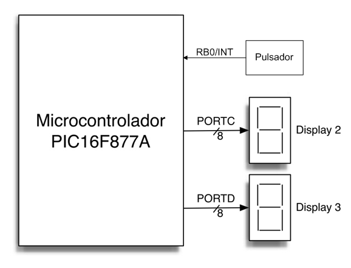

El objetivo de esta práctica es, combinando lo aprendido en
los Ejercicios 2 y 3, realizar una medida, lo más precisa
posible, de la diferencia de tiempo de respuesta entre consulta
periódica y bloqueo de programa.
2. Sistema de test
Es el mismo del Ejercicio 3:
.
7. Práctica a realizar
Una vez configurado su origen de señal de oscilador
(OPTION_REG.TOCS = 0), el temporizador TIMER0 está continuamente
andando, y por tanto nos proporciona una base de tiempos para hacer
medidas. El alumno debe entonces partir de los códigos usados en
el Ejercicio 2 y asociar una interrupción INT a la linea
RB0, de forma que aquella pulsación que provoque un flanco de
bajada (+V -> 0) en la linea provoque una interrupción, cuyo
manejador lea el valor actual del contador TMR0. Después, cuando
la rutina de procesamiento de la pulsación detecte dicha
pulsación (pero antes de cambiar el display), el código
volverá a leer el valor de TMR0 y lo representará en los
displays de 7 segmentos conectados a los puertos C y D.
Si la pulsación provoca un flanco de subida (0-> +V) no se
genera interrupción, por lo que la operación del
código en ese caso debe ser la misma que en el Ejercicio 2 (sin
lectura de TMR0 y cambiando el valor de los displays a "--").